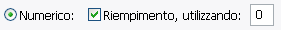
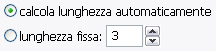
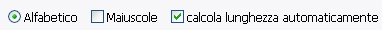
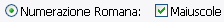
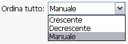
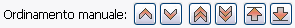
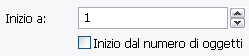
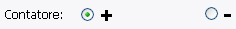
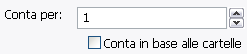
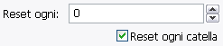

Questo è lo stile predefinito delle sequenze numeriche, se questa opzione è attiva la numerazione userà numeri normali. Per default il
Riempimento è attivato per un corretto ordinamento dei nomi dei file. Si può utilizzare qualsiasi carattere.

Qui puoi settare altre opzioni di riempimento per le numerazioni Numeriche. In modo predefinito,
calcola lunghezza automaticamente è usato per fare tutte le numerazioni della stessa lunghezza, non importa come gli
oggetti sono stati rinominati. In ogni caso se necessiti una lunghezza fissa, la puoi specificare.

Usa questa opzione se vuoi settare la numerazione alfabetica. In modo predefinito è azionato calcola lunghezza automaticamente,
questo fa si che ogni numerazione possieda la stessa lunghezza per un corretto ordinamento. Puoi scegliere di usare sia lettere
Maiuscole che minuscole.

Usa questa opzione se vuoi settare la numerazione romana. Il sistema prevede che i numeri debbano essere
compresi tra 1 e 4999, ciò è dovuto alle limitazioni del sistema numerico. Se la numerazione esce dai limiti vi sarà un errore.
Normalmente i numeri romani sono maiscoli, puoi comunque deselezionare il box se vuoi utilizzare le lettere minuscole.

Questo permette di cambiare l'ordine in cui gli oggetti vengono numerati. numerazione crescente
è il modo normale: 1,2,3,4, decrescente è l'inverso: 4,3,2,1, e
Manuale è nell'ordine in cui sono selezionati nella
area di selezione, e ti permette di cambiare l'ordine manualmente.
Nota che se usi il bottone tutti per selezionare gli oggetti con l'opzione non ordinata,
Gli oggetti saranno ordinati in modo crescente.

Se ordina tutti gli oggetti è settato su Manuale, allora potrai cliccare su un oggetto nella lista di anteprima
per selezionarlo, quindi potrai muovere l'oggetto nella lista usando i bottoni.
Da sinistra a destra: muovi su di 1, muovi giù di 1, muovi su di 5, muovi giù di 5, muovi in cima alla lista, muovi in fondo alla lista.


Questo è il valore di partenza della numerazione. I numeri saranno convertiti
a quello alfabetico o romano equivalente, se sono stati scelti come stili.
Se inizio dal numero di oggetti è selezionato, allora il numero di partenza è calcolato
automaticamente dal numero totale di oggetti che stai rinominando.

Specifica il modo in cui conti. Puoi usare anche i numeri negativi se vuoi, ma attenzione: questo
causarà degli errori se usato con i numeri romani o con la numerazione alfabetica.

Specifica l'incremento. Se Conta in base alle cartelle è selezionato, allora il conto cambia solo
se la cartella cambia.

Specifica se vuoi far ripartire il conto dopo un certo numero di oggetti, non ha importanza il tipo di numero usato.
'0' significa 'non resettare'. Può essere usato con reset ogni cartella.
Quando usato insieme all'opzione 'passo' in picker, reset ogni cartella resetterà la
numerazione ogni volta cambia la cartella.
Grandioso se vuoi rinumerare alcuni album di mp3 alla volta!